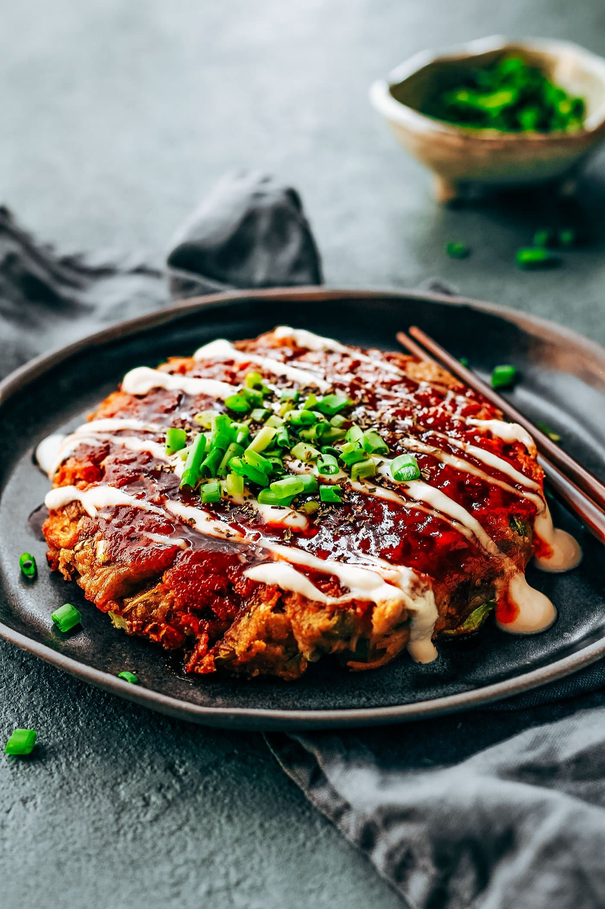

Okonomiyaki

Okonomiyaki is a savory Japanese pancake that originated in Osaka.
The batter is made from flour,
eggs, dashi (bonito stock), and shredded cabbage.
Okonomiyaki (お好み焼き) is sometimes called “Japanese savory pancake” or
“Japanese pizza”, but personally,
I think it's more like a dish between savory pancake and frittata.
It's made with flour, eggs, tempura scraps (tenkasu), cabbage, and pork belly slices and topped with a
variety of condiments like okonomiyaki sauce, Japanese mayonnaise, dried seaweed, and dried bonito flakes.
If you don't eat pork or prefer another protein choice, this dish is very adaptable. The possibility for
the filling and topping choices are endless, which is why this dish in Japanese translates to “grilled as
you like it” - Okonomi (as you like it) Yaki (grill).
Ingredients
Batter
- 1 cup all-purpose flour (plain flour)
(weigh your flour or use the “fluff and
sprinkle“ method and level off).
- ¼ tsp Diamond Crystal kosher salt
- ¼ tsp sugar
- ¼ tsp baking powder
- 5.6 oz nagaimo/yamaimo (mountain yam)
(2-3 inches, 5-8 cm)
- ¾ cup dashi (Japanese soup stock) (use standard
Awase Dashi, dashi packet or powder, or Vegan Dashi)
- 4 large eggs (50 g each w/o shell)
- ½ cup tenkasu/agedama (tempura scraps) (24 g)
- ¼ cup pickled red ginger
(beni shoga or kizami beni shoga)
Other Ingredients
1 head green cabbage (large; 1.6 lb, 740 g)
½ lb sliced pork belly (or slice your own; you can substitute with shrimp, squid, or mushrooms)
neutral oil (for cooking the okonomiyaki)
Okonomiyaki Sauce
1½ Tbsp sugar
2 Tbsp oyster sauce
¼ cup ketchup
3½ Tbsp Worcestershire sauce
Toppings
okonomiyaki sauce
Japanese Kewpie mayonnaise
katsuobushi (dried bonito flakes) (skip for vegetarian)
aonori (dried green laver seaweed)
green onions/scallions (chopped)
pickled red ginger (beni shoga or kizami beni shoga)
Steps
- In a large bowl, combine 1 cup all-purpose flour (plain flour), ¼ tsp Diamond Crystal kosher salt, ¼ tsp sugar, and ¼ tsp baking powder and mix all together.
- Peel and grate 5.6 oz nagaimo/yamaimo (mountain yam) in a small bowl (I use a ceramic grater that I love). Note: The nagaimo may irritate your skin and cause itchiness. Work quickly and rinse your hands immediately after touching the nagaimo. It is very slimy and slippery, so make sure you have a good grip on the nagaimo if you wear kitchen gloves.
- Add the grated nagaimo and ¾ cup dashi (Japanese soup stock) to the bowl.
- Mix it all together until combined. Cover the bowl with plastic wrap and let it rest in the refrigerator for at least one hour. Meanwhile, prepare the okonomiyaki sauce and other ingredients. Tip: Resting the batter relaxes the gluten, improves the flavor, and makes the okonomiyaki fluffier. Some okonomiyaki shops refrigerate the batter overnight.
- Meanwhile, gather all the ingredients for the okonomiyaki sauce.
- Combine 1½ Tbsp sugar, 2 Tbsp oyster sauce, ¼ cup ketchup, and 3½ Tbsp Worcestershire sauce in a small bowl. Mix all together until the sugar is completely dissolved.
- Discard the core of 1 head green cabbage and then mince the cabbage leaves.
- Cut ½ lb sliced pork belly in half and set aside.
- After one hour, take out the batter from the refrigerator. Add 4 large eggs (50 g each w/o shell), ½ cup tenkasu/agedama (tempura scraps), and ¼ cup pickled red ginger (beni shoga or kizami beni shoga) to the bowl. Mix until combined.
- Add the minced cabbage to the batter, one-third of it at a time. Mix well before adding the rest.
- In a large pan, heat a bit of neutral oil on medium heat. When the frying pan is hot (400ºF or 200ºC), spread the batter in a circle on the pan. We like thicker okonomiyaki (the final thickness is ¾ inches or 2 cm). If you’re new to making okonomiyaki, make it smaller and thinner so it’s easier to flip.
- Place 2-3 slices of pork belly on top of the okonomiyaki and cook covered for 5 minutes.
- When the bottom side is nicely browned, flip it over.
- Gently press the okonomiyaki to fix its shape and keep it together. Cover and cook for another 5 minutes.
- Flip it over one last time and cook uncovered for 2 minutes. If you're going to cook the next batch, transfer the cooked okonomiyaki to a plate.
- Serve on individual plates. Spread okonomiyaki sauce on top with a brush or spoon, drizzle with Japanese Kewpie mayonnaise in a zigzag pattern (optional), and sprinkle with katsuobushi (dried bonito flakes). You can also sprinkle with aonori (dried green laver seaweed) and chopped green onions/scallions and top with pickled red ginger (beni shoga or kizami beni shoga) for garnish. Please see the video for this step.
- Wrap each okonomiyaki (no sauce or toppings) in aluminum foil and then put it in a freezer bag. Store in the refrigerator for up to 3 days and in the freezer for a month. When you serve, defrost it first and heat it up in a toaster oven or oven. Its a great quick meal!
- If you have a Japanese griddle with a lid (we call it a hot plate), you can cook several pieces of okonomiyaki at once. Otherwise, I recommend cooking one okonomiyaki at a time in a frying pan.